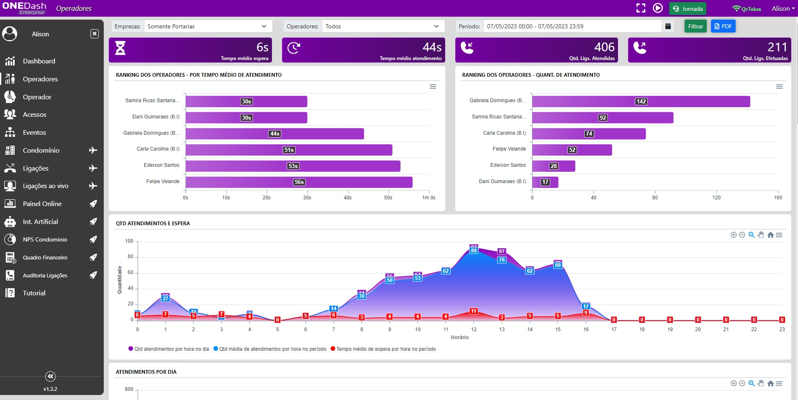

B.I
Otimizando e reduzindo custos de operação para os clientes que usam a solução da empresa One Portaria Remota
Trabalho feito dentro da empresa One Portaria na qual trabalho. Esse produto traz uma visão geral sobre a operação da empresa, visando reduzir custos e otimizar a parte operacional. São mais de 85 gráficos, trazendo métricas importantes como:
- Quantidade e tempo de duração do atendimento dos operadores
- Rankin dos operadores mais e menos ageis, dando a possibilidade de criar metas e fazer uma premiação para os mesmos
- Média de tempo de espera da empresa ou por operador que as ligações levam para ser atendidas
- Quantidade de atendimentos no dia X quantidade de atendimentos no periodo selecionado no filtro
- Quantidade de atendimentos por hora no dia e no periodo selecionado no filtro
- Clientes que são mais custosos para a empresa
- Visão geral com todas as métricas necessárias por cliente da empresa, afim de entender, otimizar e melhorar os serviços prestados
- ...Muitos outros
Além de métricas em gráficos, o B.I mostra em tempo real todas as ligações que estão acontecendo na empresa, medindo o tempo e mostrando em cards se aquele atendimentou já extourou o tempo ideal de duração definido e configurado pela empresa. Tambem mostra quais são os operadores trabalhando naquele momento, com o tempo de expediente de cada um e um indicativo de que o operador está ativo, em pausa ou se já excedeu o tempo de trabalho definido pela empresa. Além de dar a opção para os usuários com permissão de gerência de:
- Ouvir uma ligação em andamento
- Entrar em conferência com alguma ligação em andamento
- Finalizar ou Pausar o expediente de algum operador
Tecnologias
O B.I da OnePortaria foi um projeto construído do zero, utilizando no front-end:
- HTML
- CSS
- JavaScript
- jQuery
- WebSocket
- Biblioteca para gráficos
E no back-end:
- NodeJS
- API
- Integração com outra API NodeJS feita por mim, que roda dentro de uma central telefônica e coleta dados das ligações em tempo real
- SQL (MySQL e SQLServer)
Minha contribuição nesse projeto
Liderei, arquitetei e desenvolvi todo o projeto, trabalhando inicialmente com mais 1 colaborador. Posteriormente houve a necessidade de expandir a equipe com mais 3 colaboradores, então os treinei e liderei para que o projeto andasse mais de pressa. Hoje sou o responsável por manter e fazer novas implementações desse projeto
←Voltar ao portfolio